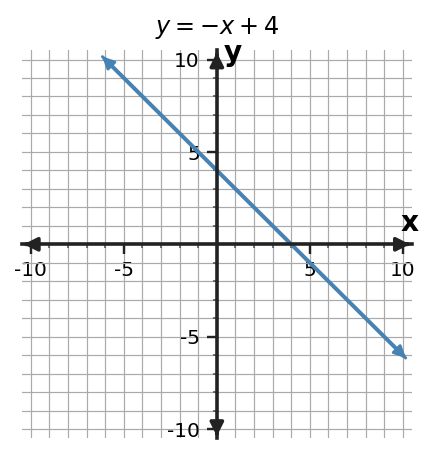

Different views, same relationship.
Section Introduction
A relationship can speak more than one language
Algebra often describes one relationship in several forms. A table organizes matching input-output values, a graph places those same values on axes, a rule tells how to calculate them, and a context explains what the quantities mean.
The goal is not to memorize separate tricks for each form. It is to notice what stays the same when the representation changes: matching values, a rate or pattern, and the meaning of the quantities.
As you read, keep asking: What information is preserved when the representation changes?
Vocabulary / Key Notation Preview
input · output · ordered pair · representation · rate
Sort the vocabulary. Write each vocabulary word in the column that best matches what you know right now. You may move a word later.
| Know for sure | Recognize | Don't know yet |
|---|---|---|
Section Preview
Skim before close reading. Look at the headings, tables, graphs, and examples. Find 1–2 things you notice and 1–2 things you wonder about.
| What I noticed | |
|---|---|
| What I wonder |
Close Reading Directions
READ IN SHORT CHUNKS. Annotate the words and visuals together. Underline evidence, circle or highlight bold vocabulary, label arrows or important features, connect sentences to tables and graphs, and jot short questions or connections in the margins. Use these directions through the What's To Come section and the reading that follows.
What's To Come
PREVIEW / DECOMPOSE. Use the connected parts to see where this section is headed. Annotate the representations and prompts as you work.
Use the shared input-output rule for every part.
\(y=3x-2\)
| x | y |
|---|---|
| 0 | |
| 1 | |
| 2 | |
| 4 |

Part (a)
Complete the value table for x=0, 1, 2, and 4.
Part (b)
Use your completed table from part (a) to graph the relationship on the coordinate plane.
Part (c)
Use your graph from part (b) to read the y-value when x=3.
Part (d)
Explain how your table and graph show the same relationship. Use one value from part (a) and the value from part (c).
Teacher note: WTC-1.1 uses the approved Notes-build stimulus repair y=3x-2 to protect the Unit Exit. The canonical Bank record remains unchanged.
Teacher support- Part (a): [(0, -2), (1, 1), (2, 4), (4, 10)] — Outputs are [-2, 1, 4, 10].
- Part (b): [(0, -2), (1, 1), (2, 4), (4, 10)] — Plot each completed row as an ordered pair and draw the continuous linear relationship.
- Part (c): 7 — The graph gives y=7 at x=3.
- Part (d): They share corresponding input-output values and the same constant rate. — For example, (2,4) appears in the table and on the graph; the graph also gives (3,7), continuing the rate of 3.
I Can 1Find matching values across different representations.
A value can be tracked from one representation to another. If a table contains input 2 with output 7, the ordered pair (2, 7) should appear on a matching graph, and a matching rule should also produce 7 when the input is 2.
Matching is strongest when you check more than one value. One accidental match does not prove two representations describe the same relationship, but several corresponding values reveal whether the pattern is truly shared.
Rule
y = -x + 4
x = 2 gives y = 2.
Table
| x | y |
|---|---|
| 0 | 4 |
| 2 | 2 |
| 5 | -1 |
Graph

Context
A quantity starts at 4 and decreases by 1 for each increase of 1 in the input.
At input 2, output 2.
A matching input-output value should survive every change of representation.
Example 1: Find the same value
The rule is y = 4x - 1. A table contains the rows (0, -1), (2, 7), and (5, 19). Which table row confirms the rule when x = 2? Explain the match.
Teacher move: Ask the student to point to the exact step or representation that justifies the answer.
You Try It 1: Match a context and table
A streaming service charges $6 to start and $3 for each month. Which row in the table matches 4 months: (4, 12), (4, 18), or (18, 4)? Explain.
Teacher move: If work stalls, ask what the input/structure/evidence tells them to do first rather than supplying the next operation.
Stop and Discuss
- Why is checking two or three input-output pairs stronger evidence than checking only one?
- How can graph scale make two relationships look similar even when their values differ?
I Can 2Create a table or graph from another representation.
To create a table from a rule, choose or use the given input values and calculate the matching output for each one. Each completed row can then become a plotted point on a coordinate graph.
To create a graph from a table, plot each row as an ordered pair. Check the horizontal axis for the input, the vertical axis for the output, and the scale before placing each point.
Rule
y = 2x - 3
| x | y |
|---|---|
| -1 | -5 |
| 0 | -3 |
| 2 | 1 |
Graphing move
Plot (-1,-5), (0,-3), and (2,1). Each table row becomes one point.
Then check that the points follow the same pattern as the rule.
Build the new representation from corresponding values, not from its appearance.
Example 2: Create a table and graph
For y = -2x + 5, complete a table for x = -1, 1, and 3. Then plot the three ordered pairs on the coordinate plane.
Teacher move: Ask the student to point to the exact step or representation that justifies the answer.
You Try It 2: Build from a situation
A container begins with 2 liters and gains 3 liters each minute. Make a table for 0, 1, 2, and 4 minutes, then graph the ordered pairs.
Teacher move: If work stalls, ask what the input/structure/evidence tells them to do first rather than supplying the next operation.
Stop and Discuss
- What information do you need before you can make a graph from a table?
- If one plotted point is wrong, what is the fastest way to diagnose whether the error came from the table or the graph?
I Can 3Check whether two representations describe the same relationship.
Two representations describe the same relationship when they produce the same outputs for the same inputs and continue the same pattern. You can test a table against a rule by substituting the table inputs into the rule.
When a mismatch appears, identify exactly where it occurs. A single row that does not satisfy the rule is evidence that the table and rule are not fully equivalent, even if other rows happen to match.
Same relationship
Rule: y = 3x + 2
| x | y |
|---|---|
| 0 | 2 |
| 2 | 8 |
Both rows satisfy the rule.
Mismatch
Rule: y = 3x + 2
| x | y |
|---|---|
| 0 | 2 |
| 2 | 7 |
At x=2 the rule gives 8, not 7.
State the exact input where the representations agree or disagree.
Example 3: Check a table against a rule
Does the table (0, 4), (1, 6), (3, 10) represent y = 2x + 4? Show enough checks to support your decision.
| x | y |
|---|---|
| 0 | 4 |
| 1 | 6 |
| 3 | 10 |
Teacher move: Ask the student to point to the exact step or representation that justifies the answer.
You Try It 3: Find the mismatch
A situation is modeled by c = 5n + 2. A table lists (0,2), (2,12), and (4,23). Do the table and rule represent the same relationship? Identify evidence.
| n | c |
|---|---|
| 0 | 2 |
| 2 | 12 |
| 4 | 23 |
Teacher move: If work stalls, ask what the input/structure/evidence tells them to do first rather than supplying the next operation.
Stop and Discuss
- Does one matching point prove two representations are the same? Why or why not?
- What kind of evidence would convince you that a table and a context disagree?
I Can 4Use values, rate, or pattern as evidence.
Evidence tells why your conclusion is trustworthy. A value is evidence when the same input-output pair appears in both representations. A rate is evidence when equal input changes produce the same output change.
A pattern can also be evidence. For example, if every increase of 1 in the input raises the output by 4, both a table and a graph should reflect that pattern. Name the evidence rather than saying only that the representations “look the same.”
Value evidence
At x=3, both representations give y=11.
Rate evidence
When x increases by 1, y increases by 3.
Pattern evidence
The outputs 2, 5, 8, 11 grow by +3.
Conclusion
Use a specific piece of evidence to justify the match.
A conclusion is stronger when it points to a value, rate, or pattern that can be checked.
Example 4: Use rate as evidence
Table A has outputs 5, 9, 13, 17 for inputs 0,1,2,3. Rule B is y = 4x + 5. Use a value and the rate to explain whether they match.
| x | y |
|---|---|
| 0 | 5 |
| 1 | 9 |
| 2 | 13 |
| 3 | 17 |
Teacher move: Ask the student to point to the exact step or representation that justifies the answer.
You Try It 4: Use a pattern to reject a match
A table has outputs 2, 6, 10, 15 for inputs 0,1,2,3. A student says it follows y = 4x + 2. Use pattern evidence to evaluate the claim.
| x | y |
|---|---|
| 0 | 2 |
| 1 | 6 |
| 2 | 10 |
| 3 | 15 |
Teacher move: If work stalls, ask what the input/structure/evidence tells them to do first rather than supplying the next operation.
Stop and Discuss
- Which is more persuasive in a comparison: “they look alike” or a stated value/rate? Why?
- When could a single value be useful evidence even though it is not enough by itself?
Vocabulary Reference
| Term | Meaning in this section |
|---|---|
| input | a value supplied to a relationship or rule |
| output | the value produced for a given input |
| ordered pair | a pair written (input, output), usually (x, y) |
| representation | a way to show a relationship, such as a table, graph, rule, or context |
| rate | how much one quantity changes compared with a change in another |
Section Summary
- A single relationship can be represented by a rule, table, graph, or context.
- Matching input-output values connect representations.
- A rate or repeated pattern is strong evidence that two representations describe the same relationship.
- Graph scale and axis meaning matter when comparing representations.
What I Understand Now
In 2–4 sentences, explain how you can tell that two different representations show the same relationship. Include one specific value, rate, pattern, table, graph, equation, or situation in your explanation.
Common Mistakes to Watch
| Mistake | What to remember |
|---|---|
| Matching by appearance instead of values. | Check actual input-output pairs, not just whether two pictures look similar. |
| Ignoring graph scale. | Read the axis labels and scale before comparing a graph to a table or rule. |
| Treating an ordered pair as two unrelated numbers. | The first coordinate is the input and the second coordinate is its matching output. |